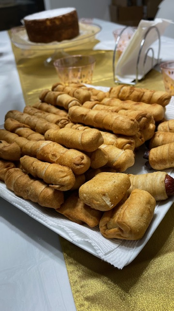

Tequeños
Ingredients
- 500g All-purpose flour
- 150g Unsalted Butter
- 20g Sugar
- 10g Salt
- 1 Egg
- 150ml cold water
- Cheese
- Oil

Preparation
- In a bowl, place the flour, sugar, salt, butter, water and egg.
- Mix everything very well and obtain a dough.
- Cut the cheese into sticks approximately 1 inch wide, or more depending on your preference.
- Cut strips of dough and wrap the cheese.
- Fry in hot oil until golden.